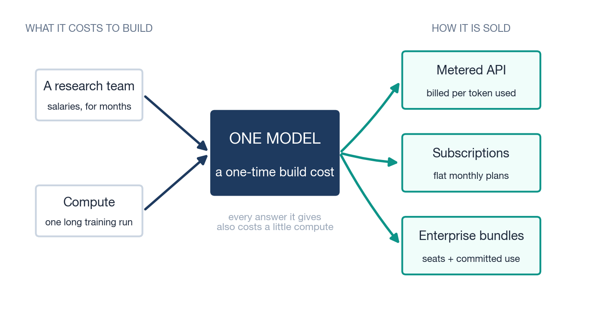
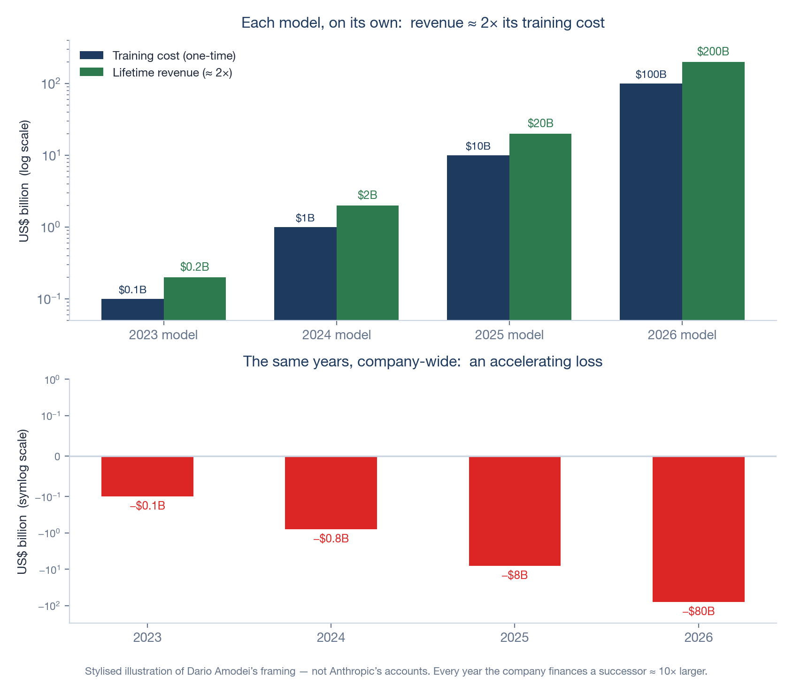
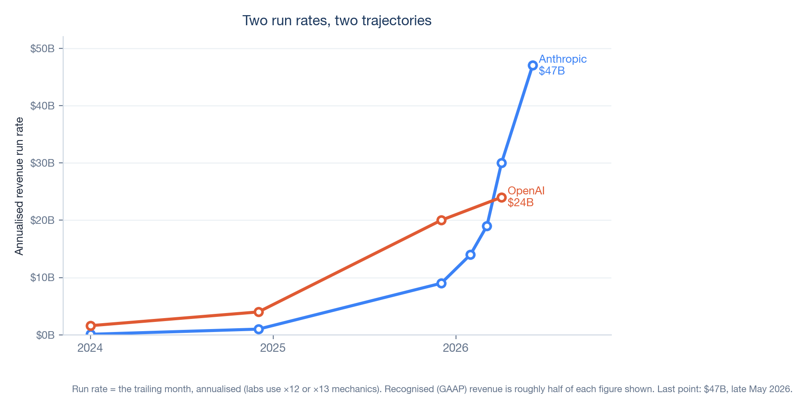
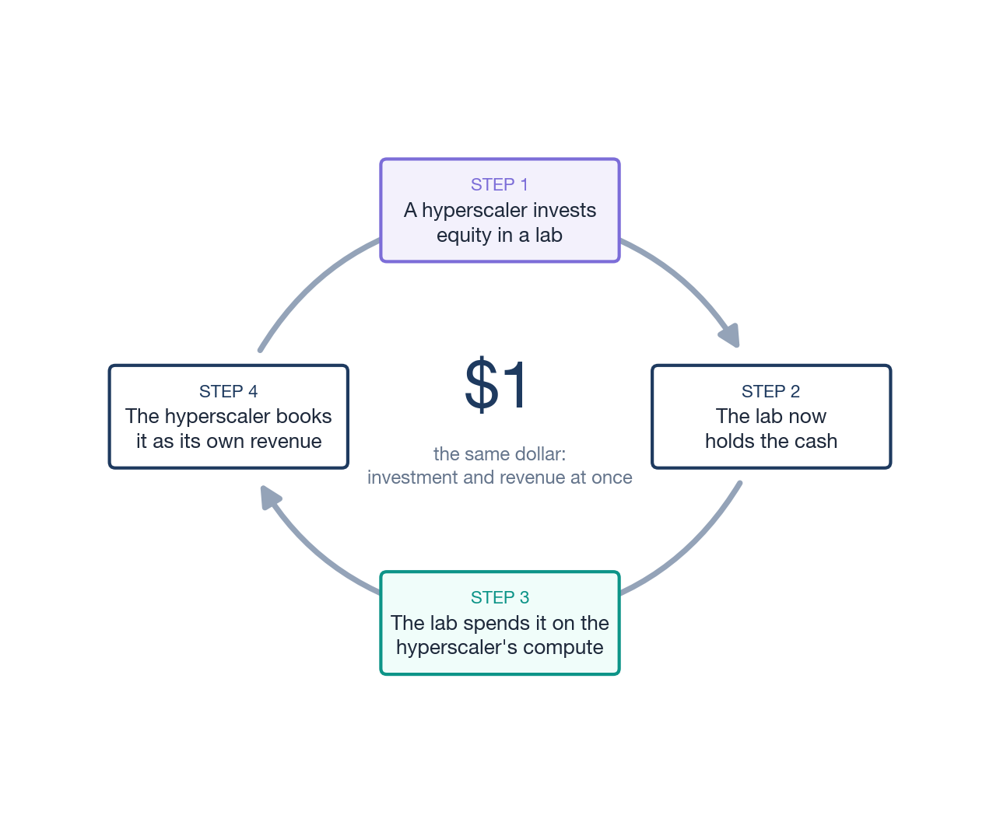

The Economics
of the Frontier
Eight ledgers on the business of the AI frontier,
and one habit for reading its numbers.
The Premise
In a single week in 2026, you could read that the same AI lab was a “$30 billion business,” a “$14 billion business,” and a business losing money on every customer it served. All three were published by serious outlets. None of them were wrong.
They were using three different rulers. One measured the best recent weeks and multiplied them out to a year. One measured revenue an accountant would actually recognise. One measured what it costs to serve a customer against what that customer pays. The numbers disagree because the units disagree, and almost nobody tells you which unit they are holding.
This booklet exists because of a question I kept failing to answer in one breath. In my trainings it arrives reliably, usually right after the coffee break: “But are these companies actually profitable? Or is this all a bubble?” For a long time my honest answers were shapeless: it depends, define profitable, which company, whose numbers. Eventually I sat down to build the answer I wished I could hand out. This is it. The short version fits in the four boxes below; the long version is eight ledgers.
So, are they profitable? The short honest answer
Everything after this point is the justification for those four boxes, the method behind them, and the caveats they deserve.
The real problem with the economics of frontier AI is not secrecy. The numbers are public; they are also enormous, fast-moving, and quoted in whichever form flatters the moment, and the human mind is not built to hold a $700 billion figure steady long enough to ask whether it means anything. Coverage of this industry drowns you in magnitudes. It rarely hands you a way to think with them.
This booklet is that way to think. It is organised as eight ledgers: eight separate accounts of how money actually moves at the frontier. A ledger is a record, not a forecast: each one shows you a different mechanism, and together they let a practitioner or an executive read any headline about Anthropic, OpenAI, Mistral, or the Chinese labs and know what they are looking at.
The eight ledgers are: How a Lab Works (the basic machine: what a model costs to build and how it is sold), Reading the Books (the toolkit: how headline numbers are constructed), The Vintage Problem (why a lab can profit on every model it sells and still lose billions), A Tale of Two Labs (why Anthropic and OpenAI are no longer the same kind of company), The Dark Factory (the race to become the utility company of intelligence), The Money Goes in a Circle (how investor dollars become revenue dollars), The Rest of the World (Mistral, the Chinese labs, and the commodity tier), and Reading the Bears (how to read the loudest critics with the same discipline you apply to the press releases).
The seller’s side
A companion booklet in this series, The Token Economics, looks at AI cost from the buyer’s side: what an organisation pays per token, and when self-hosting beats an API. This booklet is deliberately the mirror image, the seller’s side. Not “what does AI cost you,” but “how do the companies selling it make, or lose, money, and how sturdy is that business.” If you build on these labs, depend on them, or answer to someone who is writing them large cheques, that is the question underneath the question.
One recurring habit
Throughout, you will meet a small green box labelled Translate. Each one takes a number too big to feel and restates it as one you can: a yearly loss as a daily burn rate, an aggregate spend as a figure per person, a capital commitment as something physical. The boxes are not decoration but the one habit this booklet is trying to install: never repeat a frontier number you have not first converted into something a person can picture.
Anthropic reported a $30 billion revenue run rate in April 2026.1 “Run rate” means, near enough: take the best recent month, multiply by twelve (Ledger 2 shows the exact mechanic). So the underlying claim is really “we earned about $2.5 billion in our best month.” That is still extraordinary, but it is a different, smaller, more honest sentence than the headline, and you can hold it in your head.
How a Lab Works
“Where the money comes from, and where it goes”
Before the billions, a small machine. Every later ledger is a consequence of how a single AI lab turns money into a model and a model back into money, so it is worth walking that circuit once, slowly, with an imaginary lab we will call Frontier Labs, Inc.

Cost one: building the model
Frontier Labs sets out to build a model. Two things go in. The first is people: a few hundred researchers and engineers, paid serious salaries, for many months. The second is compute: an enormous cluster of specialised chips, rented or owned, running one long, uninterrupted training run in which the model learns from a vast amount of text and code.
At the end of that run you have exactly one thing: a single trained model: a large file of numbers that can answer questions. Everything spent getting there was a one-time cost. It is much closer to building a factory, or shooting a film, than to a monthly bill. You pay it all up front, before the model has earned a single cent. Real frontier training runs have been described as costing anywhere from roughly $100 million to well over $1 billion, depending on the model’s size and generation.2 The best-documented single figure of the current generation is an estimated $490 million for one 2025 frontier run, and Dario Amodei has repeatedly said he expects $10 billion runs by 2027 or 2028; treat the first as an estimate and the second as a forecast.40 For Frontier Labs, say the all-in build cost (team plus the training run) comes to $1 billion.
Cost two: running the model
Here is the part newcomers miss. Building the model was not the end of the spending. Every time a customer asks the finished model a question, the model has to think, and that thinking runs on chips that draw power and cost money. This running cost is called inference, and unlike the build cost it never stops. It is a small charge, paid again and again, on every answer the model ever gives. A lab therefore carries two quite different costs: one huge bill to build, and a stream of little bills to run.
Labs talk about selling “tokens.” A token is about three-quarters of a word. The cleanest way to picture it is a water meter: the customer pays for the words that flow through the model, in and out, and the meter clicks over a million tokens (roughly 750,000 words, about a fat novel’s worth) at a time. Selling intelligence, in this business, looks a lot like selling a metered utility.
Three ways to sell it
Now Frontier Labs has a model that works and costs a little to run. It opens three doors to revenue.
The metered API. Other companies’ developers connect their software directly to the model and are billed per token, exactly like that water meter: so much per million words in, more per million words out. Pure pay-as-you-go.
Subscriptions. Individual people pay a flat monthly fee (a $20-a-month plan, a heavier $200-a-month plan) for generous but capped access through an app. The lab is making a bet: that the average subscriber will cost less to serve than they pay, even though the heaviest ones cost far more.
Enterprise bundles. Large organisations negotiate packages: blocks of seats for their staff, higher usage limits, security features, committed-use contracts at a discount. These deals are bigger, stickier, and slower to sign than the other two.
The shape of the whole business
Walk Frontier Labs’ one model from cradle to grave and the shape appears. It cost $1 billion to build. Over the roughly two years before a better model replaces it, suppose it earns $2 billion across those three doors, while the compute to serve all those answers costs, say, $0.6 billion. The model, on its own, cleared its build cost and then some.
| Frontier Labs, Inc. · the life of one model | Illustrative figure |
|---|---|
| Build it: research team + one training run (one-time) | −$1.0B |
| Run it: compute to answer every request, over ~2 years | −$0.6B |
| Sell it: API + subscriptions + enterprise, over its life | +$2.0B |
| What the model leaves behind | +$0.4B |
Illustrative numbers for an imaginary lab. The pattern that matters (lifetime revenue of roughly twice the build cost) is the one Ledger 3 examines in detail.
So the machine has three parts: a large fixed cost to build, a metered margin on every answer sold, and a clock, because a better model, yours or a rival’s, will make this one obsolete. The whole game is to earn back the build, at the metered margin, before the clock runs out.
Where the compute actually goes
One more gauge on the machine, because it anchors a rule of thumb you will want later. A lab’s compute bill does not split neatly into “build” and “run.” It splits three ways: the final training runs that produce released models; the research around them (experiments, small-scale trials, failed runs, synthetic data); and inference, the serving of customers. The proportions are not what most newcomers guess. The best public accounting, by the research group Epoch AI, found that of OpenAI’s roughly $5 billion of research-and-development compute in 2024, only about a tenth went into the final training runs of released models; the rest fed the experimental machine around them. Similar shares, 10 to 23 per cent, show up at the labs that publish enough to check.25 The famous training run is the smallest slice of the build side, not the biggest.
Dario Amodei has compressed the same shape into a deliberately simple heuristic: “Let’s say half of your compute is for training, and half of your compute is for inference. And the inference has some gross margin that’s like more than 50%”; and, of the whole machine, “spending 50% of your compute on research, roughly, plus a gross margin that’s higher than 50%, and correct demand prediction leads to profit.”5 He flags it as a toy model, and it is one, but it is the closest thing to the labs’ own operating arithmetic in the public record. As a one-sentence rule of thumb: roughly half the compute feeds the research machine (of which the famous final run is perhaps a tenth), half serves customers, and the serving half must clear a margin above 50 per cent.
One trend bends the rule over time: the serving half is growing. Industry estimates put inference at roughly a third of all AI compute in 2023, about half in 2025, and around two-thirds in 2026, as deployed usage compounds and reasoning-style models spend extra compute on every answer.26 A young lab is mostly a research machine with a serving desk attached; a mature one is the reverse. Keep that drift in mind whenever this booklet mentions a compute bill: the bills rise even in a year when training budgets do not.
That is the entire business on one page: build, serve, allocate, beat the clock. Everything that follows is a consequence of it. Ledger 2 shows how labs report these costs and revenues, and how the reporting can mislead. Ledger 3 takes this exact shape and asks what happens when you run it not once but every year, each time building a model ten times larger. The rest of the booklet follows the same machine outward, into the strange economics it produces at scale.
Sources: Dwarkesh Patel interview with Dario Amodei · DeepSeek technical report · The Register · see Sources & Notes
Reading the Books
“Which ruler is this number on?”
The headline number is a costume
Start with the most quoted figure in the industry: the run rate. When a lab says it has reached a “$30 billion run rate,” it has not earned $30 billion. It has taken its most recent strong stretch and annualised it. The documented mechanic at both leading labs is precise: the trailing four weeks of revenue, multiplied by thirteen, with monthly subscription revenue taken times twelve.22 Run rate is a forecast wearing the costume of a result. It is not an accounting standard, it has no auditor, no regulator defines it, and in an industry growing this fast it always flatters, because the weeks it annualises are, by selection, the best ones so far.
Set run rate next to the number an accountant would actually sign: recognised revenue, the GAAP figure, the money genuinely booked over a real trailing year. The two diverge sharply. OpenAI exited 2025 describing a $20 billion run rate; the revenue recognised on its books for that year was roughly $13 billion.4 As a rule of thumb for a company compounding this fast, recognised revenue runs near half the run-rate headline. Neither number is a lie. But they answer different questions, “how fast is the last month?” versus “what did a year actually produce?”, and the gap between them is the first thing a careful reader restores.
The July 2026 revision of this booklet can make that abstraction brutally concrete, because in mid-June OpenAI’s 2025 financials leaked to the press.23 Here is one company, one year, four true numbers:
| OpenAI, 2025 · four true numbers | Figure | The question it answers |
|---|---|---|
| Annualised run rate, as announced | $20B+ | How fast were the best recent weeks? |
| Revenue recognised for the year (leaked) | ~$13.1B | What did the year actually produce? |
| Operating loss (leaked) | ~$21B | What did running the business cost? |
| Headline GAAP net loss (leaked) | ~$38.5B | What lands once one-time accounting events are counted? |
Per OpenAI’s leaked 2025 financials, reported June 16, 2026 reported. A one-time, non-cash charge tied to the company’s corporate conversion accounts for most of the gap between the operating and headline losses. Every row is true; every row answers a different question.
Read the table twice. A commentator quoting the $38.5 billion loss is not lying, and neither is the executive quoting the $20 billion revenue. But a sentence like “OpenAI lost nearly three times its revenue” mixes rulers: a GAAP loss swollen by a one-time accounting event, set against a memory of a run-rate headline. Sentences like that were everywhere in June 2026. This table is the whole discipline of the ledger in miniature.
The affidavit and the run rate
One more real case, because it shows the rulers being used as weapons. In March 2026, Anthropic’s chief financial officer stated in a sworn court declaration that the company’s lifetime revenue “exceeded $5 billion.” Days earlier, the press had carried a $19 billion annualised run rate.24 Critics ran the two numbers side by side as a gotcha: surely one of them must be false. Neither is. “Lifetime revenue” is money actually recognised since founding, a conservative, backward-looking, legally sworn ruler; a run rate is the latest four weeks multiplied out to a year, a flattering, forward-looking, unaudited one. A company growing many times over within a year will always show a startling gap between the two, and the gap is evidence of the growth, not of a lie. The lesson cuts both ways: the same pair of true numbers can be arranged to say “fraud” or to say “rocket ship.” Whoever arranged them for you had a reason.
Gross, net, and the $8 billion argument
The second ruler is gross versus net. Frontier models are sold not only direct but through hyperscaler marketplaces: Amazon Bedrock, Google Vertex, Azure. When a customer buys Claude through Amazon, a cut stays with Amazon. Book the whole sale and your revenue is gross; book only your share and it is net. The choice can swing a top line by 20 to 40 per cent.
This is not abstract. In April 2026 a leaked internal memo from an OpenAI executive argued that Anthropic’s revenue figure was overstated by roughly $8 billion precisely because Anthropic books reseller sales gross while OpenAI’s comparison was net.3 Sort that out and the two companies’ 2026 revenues land far closer together than the duelling press releases suggest. The lesson is that two true numbers are not comparable until you know each one’s ruler, and that you, the reader, must do that work, because the headline will not. Nobody cheated; the rulers differed.
Committed is not spent
The third ruler separates a commitment from a cost. The frontier deals in numbers like “a $300 billion compute deal” or “$700 billion of capital expenditure.” Almost always these are multi-year commitments · a $300 billion cloud contract is spread across five years, so it is nearer $60 billion a year, and even that arrives only if the buyer keeps consuming. A pledge to build capacity is not cash that has left the building. When a headline collapses a five-year commitment into a single staggering figure, your job is to divide it back out and ask what is contractually firm versus contingent on milestones nobody has hit yet.
“A $300 billion deal” sounds like a number from national accounts. Spread it across its real five-year term and it is about $60 billion a year, and that only if every year is consumed in full. The same arithmetic shrinks “$700 billion of AI capex” from an incomprehensible total into an annual run of build-out you can at least compare, year on year, against the revenue it is supposed to earn.
A corollary ruler: announced is not signed. In September 2025 the biggest headline in the industry was Nvidia investing “up to $100 billion” in OpenAI. The number lived in the discourse for half a year. What it actually was, the companies later confirmed, was a non-binding letter of intent; what eventually closed, in March 2026, was a $30 billion investment inside an ordinary funding round.29 Nothing improper occurred; ambitions were renegotiated, as ambitions are. But every analysis that had added $100 billion to a total was off by seventy, and few were ever corrected. Before a staggering figure enters your model of the world, ask which document it lives in: a signed contract, a term sheet, or a press release.
Whose dollar is it?
The fourth ruler is the subtlest, and Ledger 6 is devoted to it, so here only the flag. A dollar of revenue is supposed to come from a customer: external demand, someone choosing to pay for a service. But at the frontier some revenue dollars began life as investment dollars: a hyperscaler buys equity in a lab, the lab spends that money on the hyperscaler’s cloud, and it returns as the hyperscaler’s revenue. The dollar is real. Whether it represents real external demand is a different question · and one worth holding open every time you see a growth chart.
Why this is not cynicism
None of this means the frontier labs are running a confidence trick. Run rate is a normal way for fast-growing software companies to talk; gross-versus-net is an ordinary accounting judgement; multi-year commitments are how infrastructure has always been financed. The problem is not deception but scale and speed. The numbers are large enough to switch off intuition and they move fast enough that the flattering version is always close at hand. So the discipline of this booklet is small and repeatable: before you repeat any frontier figure, ask which of the four rulers it is on, and convert it into something a human can picture. Do that, and the remaining five ledgers become legible. Skip it, and you are just moving very large numbers around.
Sources: VentureBeat · Sacra · CNBC · The Information · Fortune · Where’s Your Ed At · see Sources & Notes
The Vintage Problem
“Every model sells at a profit. Why is the company losing billions?”

A vineyard that bleeds cash
Picture a vineyard. Every vintage it bottles sells out at a healthy profit. And every year it loses money, because every year it plants a new field ten times the size of the last. The books show widening losses. The wine is not the problem. The expansion is.
This is, near enough, the argument Anthropic’s chief executive Dario Amodei has made for why his company can be deeply unprofitable and a sound business at the same time.5 Stop looking at the company’s annual profit-and-loss statement, he says, and look instead at a single model as a product with its own lifetime accounts, its own vintage. His toy version runs like this. A model that cost about $100 million to train in 2023 goes on to earn roughly $200 million serving customers. The 2024 model costs around $1 billion and earns about $2 billion. Each vintage, taken alone, returns about twice its training cost · exactly the shape of the single model in Ledger 1.
Yet in any given year the company is also paying to train the next model, and that one costs roughly ten times more. So while the 2024 vintage is happily earning its $2 billion, the company is spending $10 billion training the 2025 model. The annual profit-and-loss statement nets these against each other and shows an accelerating loss: small, then large, then alarming. The conventional reading (“this company loses more money every year”) is arithmetically true and, Amodei argues, completely misleading. The losses are not a failing product but the visible cost of a choice to keep planting bigger fields.
The number under the framing: two costs, not one
That story only works if a vintage really does earn back its build, and to see whether it can you have to separate the two costs from Ledger 1 and keep them apart.
The training cost is the one-time bill to build the model (the $1 billion in our example). It is fixed: it does not change whether the model then serves ten customers or ten million.
The serving cost is what it takes to run the model for one customer’s request: a sliver of compute, paid every time. Whether a vintage ever earns back that fixed training bill depends entirely on the gap between what the lab charges for a request and what the request costs it to serve. That gap is the inference gross margin, and it is the number the whole vintage framing quietly rests on.
Working the margin
So work it. Take a million tokens of output from a frontier model, the meter from Ledger 1 clicked over once. The customer is billed on the order of $25. Producing those tokens (the GPU time, the electricity) costs the lab perhaps $6. The lab keeps the difference.
| One million output tokens, a frontier model | Illustrative |
|---|---|
| Billed to the customer | ~$25 |
| Compute cost to generate them | −$6 |
| Gross profit the lab keeps | +$19 |
| Inference gross margin | ~76% |
Illustrative, and consistent with the research firm SemiAnalysis, which puts gross margins on frontier models north of 70%.6
A margin near 75 per cent is what makes the vintage arithmetic possible. The training cost is fixed and paid once; the serving margin is collected on every token, forever. Serve enough tokens at 75 cents of profit on the dollar and the cumulative serving profit climbs past the $1 billion training bill, and then past twice it. The famous “2×” is no trick of framing, just a high-margin meter running long enough.
Why 2024 broke the framing, and 2026 mended it
The framing is only available in 2026 because that margin recently flipped. In 2024, Anthropic’s gross margin on paying customers was reported at roughly minus 94 per cent: it spent nearly two dollars serving every dollar it billed.7 With a negative margin, no amount of volume rescues you: every additional token served deepens the loss, and the fixed training bill can never be earned back. That was the “selling dollars for cents” the industry’s critics described, and in 2024 they were right.
Then, through 2025 and into 2026, cheaper hardware and far better serving software pushed that margin from deeply negative to comfortably positive; on SemiAnalysis’s reading, Anthropic’s inference margin moved from the high-30s to above 70 per cent inside a year. Only once a vintage clears a healthy profit on every token does “each model earns twice its cost” stop being a hope and start being arithmetic. The vintage framing did not prove itself. A margin flipped, and the framing became possible.
A contrast worth carrying: the leaked figures that anchored Ledger 2 imply OpenAI’s company-wide gross margin for 2025 landed somewhere in the 30s to low 40s per cent, positive and improving, but far below Anthropic’s serving margin.35 Note that the two numbers sit on slightly different rulers (a margin on inference alone versus a margin on the whole company’s revenue), which is, by now, exactly the kind of thing you check before comparing them. The margin inflection is industry-wide; its steepness is not.
OpenAI’s internal financials, reviewed by the press in late 2025, project an operating loss in the region of $74 billion for 2028.8 A yearly figure that size is just noise to the mind. Divide it down: it is roughly $200 million a day, every day, for a year. The vintage framing asks you to believe that daily burn is the cost of planting next year’s field, not the sound of a business falling apart. Whether you believe it is the rest of this ledger. (A dated note, July 2026: the loss that actually landed for 2025, per the June leak, was about $21 billion of operating loss on $13 billion of revenue, or roughly $57 million a day.23 The projection above is for 2028, and it remains a projection.)
The interrogation: three ways the framing breaks
The vintage story is elegant, internally consistent, and the most attractive idea in this booklet. That is exactly why it deserves pressure rather than applause. It rests on three assumptions, and each one is contestable.
One: the vintage must get its full earning life. “Earns twice its cost” assumes the model serves customers long enough to collect that revenue. But frontier models are made obsolete fast, sometimes by a competitor, sometimes by the lab’s own successor. If a vintage is retired in months rather than years, it never earns out, and the training cost is stranded. The hidden variable is depreciation: how quickly the expensive asset loses its value. The vintage framing tends to assume a generous earning life. The market has not been generous.
Two: each 10×-bigger model must still earn its keep. The cascade only works if a model that costs ten times more can be sold for enough to justify it. That held while each generation delivered a clear capability jump. The critic Gary Marcus, among others, argues the jumps are shrinking: that scaling has entered diminishing returns, and Amodei’s own remark that the field is “near the end of the exponential” concedes the direction of travel. If a $100 billion model is only modestly better than a $10 billion one, customers will not pay ten times more, and the cascade quietly inverts from a growth engine into a trap.
Three: it is a bet that must be won every single round. Amodei is candid that the whole structure depends on forecasting demand correctly: spend the right share of compute on research, keep a serving margin above 50 per cent, predict demand, and you print money; misjudge demand and the result “could swing wildly.” The critic Ed Zitron puts the bear case more bluntly: the losses are not an investment phase, they are the business model, and a business that must raise ever-larger sums to cover ever-larger losses is one bad forecast from a cliff. Sequoia’s David Cahn framed the same worry at the level of the whole industry as the “$600 billion question”9: the gap between what the sector has spent on infrastructure and the revenue that spending must eventually justify. The vintage framing is the most coherent answer anyone has given to that question. A coherent answer is not the same thing as a settled one, and the people who say it is wrong get a full ledger of their own at the end of this booklet (Ledger 8).
A quiet caveat: the framing depends on a choice
One last thing to carry into Ledger 4. “Each vintage earns twice its cost” is not a fact read off a meter; it depends on how you spread (amortise) a training cost across the years a model earns. Stretch the schedule and the vintage looks profitable sooner; compress it and the same model looks like a loss. OpenAI and Anthropic do not make that choice identically, which is one reason their numbers resist clean comparison. The vintage framing is a genuine insight and an accounting lens, and a lens can be adjusted. Both labs confidentially filed for public listings in June 2026 (Ledger 4); prospectuses, when they become public, will force these choices into the open for the first time.
Sources: Dwarkesh Patel interview with Dario Amodei · SemiAnalysis · The Information · The Wall Street Journal · Sequoia Capital (“AI’s $600B Question”) · Where’s Your Ed At · see Sources & Notes
A Tale of Two Labs
“Why Anthropic and OpenAI can’t be valued the same way”

Same costume, different company
Two companies are called frontier AI labs. Both are valued in the hundreds of billions. Both train models near the edge of what is possible. And it has become the most common mistake in the room to price them the same way, because they are, increasingly, two different kinds of company wearing one job title.
Anthropic is turning into an enterprise-software business. Around 80 per cent of its revenue comes from companies, not consumers. The number of customers paying it more than a million dollars a year roughly doubled, to over a thousand, in a single eight-week stretch of 2026. The revenue is concentrated, contracted, and sticky: the texture of a company that sells software to other companies.
OpenAI is turning into something else. It has the most famous consumer product in technology (ChatGPT, with roughly 900 million weekly users, and an app that crossed a billion monthly users in June 2026, faster than any app in history39), but it has also pushed outward into video generation with Sora, into a web browser, into a custom-chip programme, and into Stargate, a data-centre build-out measured in gigawatts and hundreds of billions of dollars. Those are the moves not of a company optimising a software margin but of one trying to own infrastructure and consumer distribution. For a business like that, the per-product gross margin is almost a rounding error next to the size and timing of the capital bet.
The eight-times gap
The clearest single number separating the two is revenue per user. Anthropic earns on the order of $211 from each of its (far fewer, mostly business) monthly users. OpenAI earns something closer to $25 per weekly user, the great majority of whom pay nothing at all.10 That is an eight-fold difference in how hard each user is monetised, and it is the whole bifurcation in miniature: one company has a smaller number of users it monetises intensely; the other has a vast number of users it monetises lightly and is betting it can convert attention and scale into something valuable later. (One honesty tag: per-user revenue for private companies is soft arithmetic, and a rival analyst firm gets a much smaller gap with a different method.39 Trust the direction here, not the multiple.)
“900 million weekly users” sounds like the win condition. Put it on the per-user ruler instead: at roughly $25 a user against Anthropic’s $211, OpenAI’s audience is about 35 times larger but each user is worth about one-eighth as much. Reach and revenue are not the same gauge, and reading one as the other is how the two labs get mistakenly priced alike.
The profitable quarter that proves the point
In May 2026 Anthropic told investors it expected its first-ever operating profit (around $559 million on roughly $10.9 billion of quarterly revenue) in the second quarter of the year.11 It is a real milestone. It is also, by the company’s own admission, a blip: scheduled compute costs in the back half of 2026 are expected to push it back into loss, and Anthropic does not expect a full profitable year before 2028. Ledger 3 already explained why a single green quarter is perfectly consistent with structural loss: it is one vintage maturing in the gap before the next big training bill lands. The profitable quarter does not refute the vintage problem. It illustrates it.
Two honest footnotes belong on the milestone, added in July. First, it was a projection in investor materials. The quarter has since ended, and Anthropic, still a private company, has published no actuals; treat “first profitable quarter” as projected until a filing says otherwise.11 Second, the sharpest critics noticed that the projected quarter happens to coincide with the discounted opening months of Anthropic’s enormous compute lease on a rival’s Memphis cluster (Ledger 5 has the lease): book the ramp-up discount, the argument goes, and you can book a quarter of profit.31 That reading may be uncharitable. It is also precisely the kind of question this booklet wants you to ask reflexively, so it stays.
OpenAI’s trajectory is not a blip in either direction. Its internal projections, shared with investors, describe losses that widen for years, and that is consistent with the strategy, not a contradiction of it. If you are building infrastructure and consumer distribution at continental scale, sustained loss is the entry fee. The mistake would be to read OpenAI’s losses as the same kind of fact as Anthropic’s.
Reading the two ledgers side by side
| Anthropic | OpenAI | |
|---|---|---|
| Becoming | An enterprise-software company | An infrastructure & consumer-platform company |
| Run-rate revenue | ~$47B (May 2026) reported | ~$24B (Apr 2026) reported |
| Revenue mix | ~80% enterprise | Consumer-led; enterprise approaching ~40% |
| Revenue per user | ~$211 / monthly user estimated | ~$25 / weekly user estimated |
| Really selling | Reliable models inside business workflows | Reach, a platform, and owned compute |
| Value it on | Margin, retention, seat growth | The scale & timing of the capital bet |
| Key risk | Capacity limits; a narrower revenue base | Sustained cash burn; capital-market appetite |
| Basis of reporting | Leans on company disclosure & friendly sources | More independent reporting & filings exist |
These columns are not strictly like-for-like: the two companies recognise revenue and count users differently, and, as the last row notes, the public record is thinner on Anthropic. Read the table as two profiles, not a scoreboard.
A dated note: the IPO turn (June 2026)
Six weeks after this booklet’s first snapshot, the ground shifted. In late May 2026 Anthropic closed a $65 billion round at a $965 billion post-money valuation, overtaking OpenAI’s $852 billion to become the most valuable private AI company, and reported a run rate of $47 billion.27 On June 1 it confidentially filed a draft prospectus with the SEC. OpenAI filed its own days later, with subsequent reporting suggesting its listing may slip into 2027.28
For this booklet, the filings matter for one reason above all the others: prospectuses are audited. Everything Ledger 2 taught you to demand (recognised revenue rather than run rates, gross versus net booking, amortisation schedules, related-party revenue from the investors of Ledger 6) has to be printed in a public S-1. The era in which the frontier’s finances were a contest of leaks and annualised headlines now has an expiry date. When the documents surface, read them with this booklet open.
Why this booklet does not crown a winner
It is tempting to end a comparison with a verdict. This one does not, and the refusal is deliberate. “Which lab is winning?” assumes they are running the same race. They are not. One is trying to become the next great enterprise-software company; the other is trying to become something closer to a utility with a consumer brand attached. Each could succeed or fail on its own terms. The useful question is not which is ahead but which kind of company is each, and which kind do you want as a supplier, a partner, or an investment. That question you can actually answer. A winner you cannot, and anyone who offers you one is selling a ruler they have not shown you.
Sources: TechCrunch · CNBC · Bloomberg · Sacra · SemiAnalysis · The Wall Street Journal · see Sources & Notes
The Dark Factory
“Why the labs can’t stop spending”
Tokens as the electricity of the future
Step back from any single lab and ask what the whole industry is actually racing toward. The clearest answer: intelligence is on its way to becoming a metered utility. Ledger 1 already showed the shape: tokens sold through a meter, like water, like power. Carry that forward. Once electricity became a utility, you stopped caring which generator produced the current in your wall; you simply paid per kilowatt-hour and built your life on the assumption it would be there. Tokens are heading the same way: a metered unit of cognitive work, always on, drawn on without a thought.
If that is the destination, then the frontier labs are not, in the end, software companies at all but utilities in the making, and the contest between them is a contest to become the utility company of intelligence, the master vendor of the electricity of the future.
The datacenter is a dark factory
Where is this utility generated? In a building that deserves its industrial name. A “dark factory” is a real term from manufacturing: a plant so fully automated that the lights can be switched off, because no human needs to be on the floor. A modern AI datacenter is exactly that: a vast hall of humming machines, drawing the power of a small city, with almost nobody inside. The difference is only in the product. A dark factory in the old economy stamped out car parts. This one manufactures intelligence itself, by the trillion tokens, and ships it down a wire.
Industry capital-expenditure estimates for 2026 land around $700 billion, with 2027 forecasts pointing toward $900 billion12 estimated. Divide the 2026 figure by the world’s population and it is roughly $86 for every person alive, spent in a single year building dark factories whose only product is machine thought, whether or not that person ever uses one. Said that way, the scale of the bet on this one idea becomes hard to look away from. (A companion booklet, Scenario Planning for Generative AI, runs a full decoder on exactly this capex gauge; if you want the build-out unpacked instrument by instrument, start there.)
Why nobody can stop spending
This reframes the enormous, relentless capital spending the other ledgers keep brushing against. If the prize is to be the utility, not a utility, then second place is worth a small fraction of first. A land grab for the foundational layer cannot be conducted at half speed: pause, and a rival lays claim to the ground. That is why capex does not respond to losses the way an ordinary company’s would; why the vintage treadmill of Ledger 3 keeps accelerating; why “we could be profitable if we stopped” is technically true and strategically irrelevant. The labs are behaving not like businesses optimising a quarter but like contenders in a once-only race to own an entire layer of the future economy.
The clearest exhibit of the compulsion arrived in May 2026. Anthropic, out of serving capacity, leased the entirety of a direct rival’s flagship data centre (xAI’s Colossus 1 in Memphis, some 220,000 GPUs drawing over 300 megawatts) for a reported $1.25 billion a month, to serve inference for its subscription tiers.31 When you are renting your competitor’s factory for fifteen billion dollars a year because your own factories are full, you have stopped optimising quarters and started refusing to lose a race.
Chasing verticals to fund the race
And here is the consequence that explains so much of the labs’ restless behaviour. The race to be the utility costs more than the utility business itself yet earns. No lab can fund the journey on raw token sales alone. So whenever a vertical forms (a specific, high-value use of the models that throws off serious cash) the labs go after it, hard and fast.
The clearest example so far is augmented coding. Anthropic’s Claude Code went from public launch to a $1 billion revenue run rate in six months, and past $2.5 billion within a year; OpenAI’s rival, Codex, climbed to five million weekly users by the end of May 2026.13 Coding is doing double duty for the labs: it is proof that the technology produces real economic value, and it is an engine: a vertical lucrative enough to help finance the dark factories. Expect the pattern to repeat wherever a vertical’s economics are good enough: customer support, legal work, search, scientific research. When the labs see “ridiculous revenues” forming in a vertical, they will move, because the race needs the fuel.
Utility and product at once
This resolves a contradiction that otherwise makes the labs look incoherent. Are they horizontal infrastructure (utilities selling raw intelligence to everyone) or vertical product companies, building coding tools and browsers and apps? The honest answer is that the hypercompetition forces them to be both, at the same time, by necessity. The utility is the destination. The verticals are the fuel that pays for the trip. A lab that sold only raw tokens could not afford the race; a lab that sold only coding tools would be a feature, not a foundation. So they sprint in two directions at once, and that is why “what is an AI lab, exactly?” is a question that refuses to sit still. (Who gets access to the finished utility, and on whose political terms, is the seller-side story this booklet leaves to its companion, The Mercantilism of Generative AI.)
Verticals are one source of fuel for the race. They are not the only one. The next ledger follows the other: the capital that arrives not from customers at all, but from the labs’ own investors, moving in a circle.
Sources: Anthropic · Neowin · Futurum · SemiAnalysis · see Sources & Notes
The Money Goes in a Circle
“When an investor’s dollar comes back as revenue”

Follow one dollar
Amazon wires a dollar of equity investment to Anthropic. Anthropic wires that dollar to Amazon Web Services to pay for computing power. AWS books it as cloud revenue. The dollar has not vanished and nothing improper has happened, but it is now doing double duty: it is counted as Amazon’s investment and as Amazon’s revenue, and it is propping up two growth stories at once. It is the same dollar.
That little circuit, repeated at enormous scale, is the most misunderstood feature of frontier-AI finance. The honest question is not “is this a scandal” (mostly it is not) but “how much of the growth I am looking at is the open market choosing to pay, and how much is an investor’s own money making a lap?”
The deals that fill the ring
Six partnerships fill the loop. In most, an equity investment flows toward a lab and a far larger compute commitment flows back: the round trip the diagram above describes.
| Partner → Lab | Equity invested / held | Compute committed back |
|---|---|---|
| Amazon → Anthropic14 | ~$13B, up to ~$33B with milestones | $100B+ on AWS, over ~10 years |
| Google → Anthropic15 | up to $40B (cash + compute) | ~$200B to Google Cloud, over 5 years |
| Microsoft → OpenAI16 | ~$135B stake (~27%) | ~$250B of Azure purchases |
| Amazon → OpenAI29 | $50B (March 2026 round) | ~$38B of AWS compute, over ~7 years |
| Nvidia → OpenAI17 | $30B closed, Mar 2026 (an earlier “up to $100B” letter of intent was never finalised) | returns largely as GPU orders |
| Oracle → OpenAI18 | (compute partner, not equity) | ~$300B Stargate deal, over 5 years |
Figures as reported, July 2026 · see notes 14–18 and 29. Equity flows one way; a much larger compute commitment flows back. And note the fourth row: the same investor can now sit on both labs’ cap tables at once.
Two of these deserve a closer look, because they are where the loop tightens hardest.
Nvidia and OpenAI. In September 2025 Nvidia announced an intent to invest “up to $100 billion” in OpenAI, to be disbursed as data-centre capacity came online; capacity OpenAI would build substantially by buying Nvidia’s own chips.17 That announcement was a letter of intent, and it was never finalised: what closed, in March 2026, was $30 billion inside OpenAI’s funding round, Ledger 2’s “announced is not signed” in the wild.29 The mechanism survives at the smaller scale: the chip vendor funds the customer to buy the vendor’s chips. Oracle and OpenAI. Oracle is not an equity investor, but it sits on the same circle: its reported five-year, roughly $300 billion Stargate compute deal with OpenAI18 is a commitment large enough to reshape Oracle’s own financial statements.
Nvidia’s “up to $100 billion investment” made headlines for half a year; what closed was $30 billion. Even at the real size, strip the arrangement to its mechanism and it reads: Nvidia lends OpenAI the means to become Nvidia’s largest customer. That can be a perfectly rational way to seed demand, but “investment” and “pre-paid future order” are different things, and only one of them tells you the open market wants the product.
How the loop inflates valuations
The circle does more than move cash. It moves valuations. When Nvidia commits capital to OpenAI and OpenAI orders Nvidia chips, Nvidia’s revenue and order backlog swell, and a company with a swelling backlog is worth more, so its market value rises. When Oracle signs the Stargate deal, its contracted backlog leaps; by its own disclosures, Oracle’s remaining performance obligations jumped past half a trillion dollars, and its share price moved with the news. Each deal, in other words, re-rates the worth of more than one company on the circle at the same time.
Stack enough of these and an effect appears that no single deal intends: the whole sector looks larger, busier, and more certain than independently verifiable end-customer demand alone would justify. Valuations lift each other. The capital, the revenue, and the market value all swell together: partly on real demand, and partly because the same money has been counted, in good faith, at several stops around the ring.
The old script: vendor financing
This movie has played before, and the bears of Ledger 8 name the rerun openly. In the late 1990s the telecom-equipment makers Lucent and Nortel lent their customers billions with which to buy Lucent and Nortel gear. The loans were booked as sales, the sales inflated the stocks, and when the borrowing customers died in the 2001 crash, the receivables died with them. The practice has a name, vendor financing, and the short-seller Jim Chanos calls today’s version “Lucent 2.0”: putting money into money-losing companies so that those companies can order your chips. Analysts have run the comparison quantitatively; on one much-cited reading, Nvidia’s committed investments and debt backstops amount to roughly two-thirds of a year’s revenue, a ratio in Lucent’s historical territory.32
The rebuttal is also quantitative, and it is fair. Lucent’s borrowers were leveraged startups burning cash; Nvidia’s four largest customers generated over $450 billion of operating cash flow in 2024, Nvidia itself sits on tens of billions of net cash, and the company answered its critics with a formal memo to analysts: customers pay in around 53 days, and there are no off-balance-sheet vehicles.32 Jensen Huang’s sharpest point is utilisation: the dot-com bubble laid fibre that stayed dark for a decade, whereas today almost every GPU that exists is lit and busy.
Then hold the uncomfortable middle case: Cisco. No fraud, real profits, genuine dominance of a genuinely transformative technology, and its stock still fell roughly 87 per cent when the buildout paused, on valuation compression alone. It did not reclaim its March 2000 peak until December 2025, a quarter of a century later.32 Circularity does not need wrongdoing to be dangerous. It only needs a pause.
The depreciation argument
The quietest big number in the whole system is an accounting schedule: how many years does a chip earn? Spread a GPU’s cost across six years and your reported profit is billions higher than if you spread it across three. Between 2022 and 2025, Microsoft, Alphabet, Meta and Oracle all extended their server depreciation schedules, each extension lifting reported profits by billions; The Economist estimated that re-depreciating the big clouds’ AI fleets over three years would cut roughly 8 per cent from their pre-tax profits, and called the question a four-trillion-dollar accounting puzzle.33 The investor Michael Burry, of The Big Short fame, put disclosed short positions behind the bear reading and called understated depreciation “one of the more common frauds of the modern era”; Nvidia took the charge seriously enough to rebut it in a formal memo.33
The record then offers a genuinely instructive split. In January 2025 Amazon went the other way, shortening its server schedule from six years to five and citing the pace at which AI hardware becomes obsolete. One hyperscaler’s accountants are lengthening the earning life of the machines while another’s shorten it, and the fleets run the same chips.33 The defenders have real evidence too: old accelerators stay busy (Google reports seven-year-old TPUs at full utilisation; analysts note five-year-old A100s still earning healthy margins), and much of the new capacity is pre-sold under long contracts that shift obsolescence risk onto the customer. But notice what this argument is. It is Ledger 3’s vintage problem one layer down the stack: whether hyperscaler AI profits are real depends on how long the expensive asset keeps earning, and nobody yet knows. When the schedules move again, in either direction, that is a gauge worth reading.
The fair rebuttal
Before the caveats, the case for all this, stated properly. A strategic investor seeding a company that will become a major customer is ordinary capitalism, not a trick: telecoms, airlines, and the early cloud were all built this way. The Azure compute OpenAI buys is genuine: real models run for real users on those servers. Microsoft is not paying itself; it is selling a service a willing buyer would want regardless (and since an April 2026 renegotiation OpenAI is free to buy from rival clouds too, which makes the Azure dollars more market-tested, not less30). And there is a sturdier point: the labs are not only spending investor money. A great deal of their revenue is now ordinary customers · enterprises and consumers with no equity stake · paying for a product they chose. The loop is real, but it is not the whole circuit.
Three caveats to carry out of this ledger
So describe the loop soberly and land on three things, no more.
One: endogenous growth. When a portion of a lab’s revenue traces back to its own investors’ capital, the growth curve is partly endogenous: funded from inside the arrangement rather than won in the open market. It is not fake, just not the same evidence of demand as a dollar from an unrelated customer, and a revenue chart cannot tell you the mix on its own.
Two: concentration. The loop binds a handful of firms tightly together. If one major lab falters, the damage does not stay contained: it lands on a hyperscaler’s investment line, its revenue line, and its contracted backlog at once. The circle that amplifies growth on the way up amplifies stress on the way down.
Three: opacity. Because of the gross-versus-net problem from Ledger 2, an outside reader cannot reliably size the loop. You can see that it exists and that it is large. You cannot, from the public record, say precisely how much of any headline number it accounts for. Honesty about that limit is part of reading the books well.
Sources: CNBC · Bloomberg · TechCrunch · Amazon · Nvidia · Data Center Dynamics · The Economist · Yahoo Finance · see Sources & Notes
The Rest of the World
“Everyone not named Anthropic or OpenAI”
If you only watch the two leaders, you mistake the game
Ledgers 3 to 6 examined the American duopoly. But the most instructive economics at the frontier are happening at its edges: where a well-run European lab is losing the race anyway, and where another set of labs has decided that the race the Americans are running was never the point.
Mistral: credible, and structurally behind
Mistral is France’s entrant and Europe’s best one. Its revenue grew impressively in relative terms, from roughly $16 million at the end of 2024 to an estimated $400 million annualised a year later. Set that beside Anthropic’s $30 billion and the relative success disappears: Mistral is on the order of 75 times smaller, and because the leaders are growing faster from a vastly larger base, the gap is widening, not closing.
Mistral ships genuinely good models; talent is not the constraint. The constraint is capital. Its September 2025 Series C raised €1.7 billion, led by the Dutch chip-equipment maker ASML, which became its largest shareholder; in early 2026 it arranged an $830 million debt facility to buy some 13,800 Nvidia chips for a data centre near Paris.19 Those are serious European numbers. They are also roughly two orders of magnitude below the compute commitments Ledger 6 described on the American side. Frontier-tier monetisation is gated by frontier-tier compute, and frontier-tier compute is gated by capital Mistral cannot raise at American scale. Mistral’s own public revenue target for 2026 is $1 billion: a serious number, and roughly a fiftieth of where Anthropic’s run rate already stood by May.19
“75 times smaller” is easy to wave past. Make it concrete: if Anthropic were a large national airline with a global network, Mistral would be a competent regional carrier. The regional carrier can be well run and worth flying, but it is not going to out-fly the network by trying harder. Different fleet, different capital base, different game.
Mistral’s response is to stop competing on the duopoly’s terms: less pure model-API rivalry, more sovereign and on-premise offerings, vertical models for regulated European industries, and the pitch that a European customer may want a European supplier for reasons that are not only technical. That is a sane strategy. It is also, plainly, the strategy of a company that has accepted it will not win the raw-scale race.
China: the model is the bait, the ecosystem is the business
The Chinese labs invite a Western misreading. DeepSeek reported training its V3 model for a marginal cost near $5.6 million, a figure that, taken alone, made the American spend look absurd.20 The honest accounting is less dramatic: that number excludes prior research, failed runs, and the cost of the hardware itself, and the all-in figure is many times higher. But chasing the exact training cost misses the larger point, which is that for the leading Chinese players, the model was never the product.
So what is? The product is the ecosystem, and the ecosystem makes money the way it always has. Alibaba’s Qwen models feed Taobao and its cloud: the money is made on a cut of every commerce transaction and on cloud contracts. ByteDance’s models feed its apps: the money is made on advertising sold against attention. Across the sector the pattern repeats: super-app engagement, payment fees, subscriptions to services that have nothing to do with an API meter. In that design a frontier-grade model given away near-free is not a failed business; it is a customer-acquisition cost for a far larger one. The model is the bait. The ecosystem is the hook, and the hook is where the revenue has always been.
Two of these companies, Zhipu and MiniMax, listed in Hong Kong on the same January 2026 day, at valuations modest by frontier standards: roughly $7 billion and $6.5 billion respectively.21 What happened next is the instructive part. By mid-June 2026 Zhipu’s market value had multiplied roughly twenty-fold from its debut, to around $63 billion, with MiniMax reaching about $16 billion; a rally fed by analyst upgrades, a fully open-source frontier-grade release, and, not least, an American own goal (the dated note below).38 The public market is funding the strategy, and profitability on inference is simply not the case being made to those investors. “Chinese labs can’t make money selling tokens” is true and almost irrelevant: selling tokens was never the plan.
The commodity tier eats the floor
There is a third force, and it presses on everyone. Below the frontier sits a fast-improving commodity tier: cheap open-weight models, many of them Chinese, and discount API offerings. For tasks that do not need frontier capability, these are nearly free. SemiAnalysis’s reading is stark: margins on frontier models sit north of 70 per cent, while trailing models exposed to open-weight competition are squeezed toward the floor, commonly put below 20 per cent (the precise floor is contested; the direction is not).
From the buyer’s side, the subject of the companion booklet The Token Economics, this is simply good news: cheaper tokens. From the seller’s side, the one this booklet is about, it is a slow squeeze. Every routine workload that drains from a premium API to a near-free open-weight model erodes the pricing power the whole vintage cascade of Ledger 3 depends on. The frontier labs are protected only at the genuine frontier, and only for as long as the frontier stays far enough ahead of the commodity tier to be worth paying for.
The last account
Seven ledgers so far, and through every one of them a chorus has been audible offstage: the critics who say that all of it, the margins, the vintages, the loop, is a bubble waiting for its pin. They have documents, track records, and in some cases real short positions. They deserve better than a dismissive paragraph, and their claims deserve exactly the same instruments this booklet has been aiming at the labs’ press releases. The last ledger reads the bears.
Sources: CNBC · Mistral AI · Sacra · The Register · DeepSeek technical report · SCMP · Bloomberg · Axios · see Sources & Notes
Reading the Bears
“How to read the people who say it is all a bubble”
The bench
“The bears” is not one argument but at least six, made by different people, on different rulers, with different things at stake. Before you quote any of them, know which one you are holding.
| Critic | The claim, in one line | What to check before repeating it |
|---|---|---|
| Ed Zitron | The cash math never closes: the products lose money at scale and the revenue announcements never reconcile with audited reality. | Whether the specific numbers are from documents or his own modelling; his burn projections have varied several-fold between essays.34 |
| Gary Marcus | Scaling has hit diminishing returns, so the 10×-bigger-model bet (Ledger 3) stops paying. | A capability claim, not a financial one; test it against model releases, not income statements. |
| Jim Covello (Goldman) | “At some point, you’ve got to make money”: the sector needs trillions of cumulative investment justified by revenue that is not arriving fast enough.37 | His own bank simultaneously publishes bullish capex research; institutions contain multitudes. |
| Jim Chanos & Michael Burry | The accounting: vendor financing (“Lucent 2.0”) and understated depreciation flatter the whole stack’s profits.33 | Both hold disclosed short positions; a short is a timed bet, and in that business “early” and “wrong” feel identical. |
| Paul Kedrosky | The macro: AI capex at roughly 2% of GDP is eating the rest of the economy’s investment. | A statement about the economy, not about any lab’s viability; both can be true. |
| David Cahn (Sequoia) | The sympathetic insider’s version: a widening gap between infrastructure spend and the revenue that must eventually justify it. | He has notably not updated his famous “$600B question” with a bigger number; larger figures attributed to him since are journalist gloss. |
Six bears, four different rulers: cash flow, capability, accounting, and macroeconomics. They are routinely quoted as if interchangeable. They are not.
The Zitron file
Ed Zitron is the loudest and most-read of the bears, which makes him the best case study in symmetric reading. Start with what he gets right. He does real document work: it was his newsletter that first published OpenAI’s leaked 2025 financials, the $13 billion-revenue, $38.5 billion-headline-loss numbers that anchored Ledger 2, a day ahead of the mainstream press.34 The “selling dollars for cents” era he described in 2024 was real; the affidavit-versus-run-rate catch in Ledger 2 was his; and his insistence that subscription pricing is subsidised by investor capital is a fair description of how growth-stage software has always worked, stated with unusual bluntness.
Now the other column of the ledger. He has predicted OpenAI’s imminent financial collapse more or less continuously since August 2024; since then the company has closed the largest private funding round in history and confidentially filed for an IPO. His own numbers sometimes disagree between essays written weeks apart. And in June 2026 came the most instructive twist of all: a writer named Garrison Lovely took the very financials Zitron had surfaced and showed that they contradict his central claim, because the gross margins in them are positive and improving, roughly 28 per cent in 2024 rising into the 40s in 2025.35 The best documents in the bear case, read carefully, undercut the loudest conclusion drawn from them.
The lesson is not “ignore Zitron” but to separate the reporter from the analyst: treasure the documents he surfaces, and redo the arithmetic yourself. He is also, honestly read, a professional critic whose audience grows with alarm, exactly as a lab’s audience grows with hype. Neither incentive makes its owner wrong. Both make them quotable, and Ledger 2 taught you what to do with quotable.
The best of the bulls
Symmetry requires reading the other direction’s best, not its worst. Three stand out as of mid-2026. The analyst Azeem Azhar built the most falsifiable bull case: five empirical bubble indicators drawn from three centuries of investment manias, scored openly, with exactly one of the five (industry strain) flashing red as of June 2026 and revenue momentum green.36 You can disagree with the scoring, which is the point: it is a framework you can check, not a vibe. Ben Thompson made the strategist’s case that agents change what the revenue can become, and marked his own reversal with the most honest sentence in the genre: “I don’t think we’re in a bubble (which, paradoxically, maybe is the truest evidence we are).” And JPMorgan published, from one research house, both the bullish reading (hyperscaler operating cash flow heading past $900 billion by 2027) and the bear-adjacent one (roughly $650 billion of new annual revenue needed to justify the buildout at a 10 per cent return).36 When one institution hands you both rulers, use both.
A dated note: the first flinch (June 2026)
The revision window for this booklet happened to include the market’s first genuine AI scare. Across three weeks in June 2026, AI-heavy stocks sold off hard: Nvidia dropped 5.9 per cent and Broadcom 7.5 per cent in a single session, South Korea’s chip-heavy Kospi hit a circuit breaker, and the Nasdaq bled through most of the month, with commentary blaming exactly the themes of this booklet: circular deals, promotional token pricing, and revenue that is annualised rather than audited.37 Gary Marcus declared it “AI’s Black Friday.” Whether it was the top of a bubble or a tremor inside a boom is not knowable from inside the moment, and this booklet will not pretend otherwise. Log it, date it, and watch what the next such episode does to the gauges you now know how to read.
How to read a bear
The method of this ledger, compressed to four questions. They are Ledger 2’s questions, pointed the other way.
One: which ruler is the critic holding? A GAAP loss quoted against a run-rate revenue is two rulers in one sentence, and it is the single most common construction in bearish commentary. You know how to take it apart now.
Two: is the number a document’s or the critic’s? Leaked financials, sworn affidavits and SEC filings are gold, whoever surfaces them. Projections of future burn are modelling, whoever publishes them, and deserve the same projected tag a lab’s investor deck gets.
Three: what is the scoreboard? A dated, falsifiable bear claim is analysis; ask what the same critic said a year ago and whether they ever scored it. A critic who is never wrong by their own accounting is running a run rate of their own.
Four: what would change their mind? A bear who can name the evidence that would flip them is an analyst. One who cannot is a genre. The same test applies, word for word, to the bulls.
I enjoy reading Zitron more than almost anything else written about this industry, which is exactly why I make myself redo his arithmetic. The exercise I recommend to my training groups: take one bear essay and one lab press release from the same week, and find the ruler mismatch in each. There is almost always one in each. It cured me of repeating headlines from either direction, and it is the closest thing to a final exam this booklet has.
Where I’d put my chips
A booklet that teaches you to demand falsifiable claims should end by making some. These are my personal probabilities as of July 2026, in the same spirit as the chips section of the Scenario Planning booklet: not investment advice, just the author putting his own reading on the record where it can be scored.
Closing the books
Eight ledgers, and a single habit holding them together. A frontier number means nothing until you know which ruler it is on, whose dollar it really is, and what kind of company, or country, or business model, or critic, produced it. The figures in this booklet will be stale within months; the way of reading them will not. When the next staggering headline arrives, from a lab or from a bear, do what every ledger here has done: find the unit, check the document it lives in, translate it into something a person can picture, and ask what kind of bet it really represents. That habit, not any number, is what this booklet was for.
Sources: Where’s Your Ed At · obsolete.pub · Exponential View · Stratechery · Fortune · NPR · Yahoo Finance · see Sources & Notes
Sources & Notes
Numbered notes for the load-bearing and contestable figures in this booklet. Notes 1–21 were gathered for the May 2026 edition; notes 22–40 were added in the July 2026 revision, which also corrected three of the original entries (8, 17 and 21; each says so in place). Inline tags, reported (confirmed by a company or filing), projected (a forward estimate, often investor-facing), estimated (a third-party calculation), indicate how solid each figure is. A few sources are paywalled or were originally leaked; these are cited by outlet without a stable free link.
Premise
- Anthropic’s ~$30B revenue run rate (April 2026) and the “80×” growth remark · VentureBeat, “Anthropic says it hit a $30 billion revenue run rate”: venturebeat.com. Revenue history compiled by Sacra: sacra.com/c/anthropic. ↩
Ledger 1 · How a Lab Works
- Order-of-magnitude training-run costs ($100M–$1B+) draw on Dario Amodei’s public framing in the Dwarkesh Patel interview: dwarkesh.com; a cheaper-tier counterpoint is DeepSeek’s reported V3 figure · DeepSeek-V3 technical report: arxiv.org. The Frontier Labs, Inc. numbers are an explicit illustration, not a real company. ↩
Ledger 2 · Reading the Books
- The disputed ~$8B gross-vs-net gap traces to a leaked April 2026 internal memo from OpenAI’s CRO Denise Dresser, arguing Anthropic books reseller revenue on a gross basis; reported by multiple outlets and summarised by Sacra: sacra.com/c/anthropic. ↩
- OpenAI’s ~$20B run rate vs ~$13B recognised 2025 revenue, and the run-rate-to-GAAP relationship · CNBC on the $852B round and revenue: cnbc.com; Microsoft’s 10-Q as a window into OpenAI’s losses, Om Malik: om.co. ↩
Ledger 3 · The Vintage Problem
- Dario Amodei’s per-model (“vintage”) framing, the ~2×-return toy model, the 50%-compute-on-research heuristic, and “near the end of the exponential” · Dwarkesh Patel interview, February 2026: dwarkesh.com. ↩
- Inference gross margins · frontier models north of 70%, trailing models below 20%, and Anthropic’s shift from ~38% to >70% inside a year · SemiAnalysis, “AI Value Capture”: newsletter.semianalysis.com. The per-token worked example is illustrative and consistent with this range. estimated. ↩
- Anthropic’s 2024 gross margin of roughly −94% on paying customers (−109% all-in) · The Information, November 2025 reporting (subscription). ↩
- OpenAI’s projected ~$74B operating loss for 2028, $115B cumulative burn through 2029, and breakeven pushed to 2029–2030 · The Wall Street Journal, reporting on documents shared with investors, November 2025 (subscription; the May edition of this booklet misdated this reporting to May 2026, corrected in the July revision). projected. ↩
- “AI’s $600B Question” · David Cahn, Sequoia Capital: sequoiacap.com. The bear case on losses-as-business-model is associated with Ed Zitron’s “Where’s Your Ed At” newsletter. ↩
Ledger 4 · A Tale of Two Labs
- Revenue-per-user estimates (~$211 for Anthropic, ~$25 for OpenAI) and the enterprise revenue mix · Sacra: sacra.com/c/anthropic. estimated. ↩
- Anthropic’s projected first operating profit (~$559M on ~$10.9B revenue, Q2 2026) and the caveat that profitability may not hold through the year · TechCrunch: techcrunch.com; figures originate in WSJ reporting on investor materials. projected. ↩
Ledger 5 · The Dark Factory
- 2026 hyperscaler / AI capital-expenditure estimates · widely reported in the $660–700B+ range; Futurum, “AI Capex 2026”: futurumgroup.com. estimated. ↩
- Claude Code · $1B run rate in six months, past $2.5B within a year · Anthropic: anthropic.com. OpenAI’s Codex reaching 4 million weekly users in April 2026 · Neowin: neowin.net · and 5 million by May 31, 2026 (see also note 39). ↩
Ledger 6 · The Money Goes in a Circle
- Amazon’s ~$13B cumulative investment in Anthropic (up to ~$33B with milestones) and Anthropic’s $100B+ AWS commitment · Amazon: aboutamazon.com; Project Rainier: aboutamazon.com. ↩
- Google’s up-to-$40B Anthropic investment (cash + compute) and Anthropic’s ~$200B, 5GW Google Cloud / TPU commitment · TechCrunch: techcrunch.com. ↩
- Microsoft’s post-restructuring stake (~27% / ~$135B), the 20% revenue share capped at $38B, and OpenAI’s ~$250B Azure commitment · CNBC: cnbc.com; cap detail, AI Magazine: aimagazine.com. ↩
- Nvidia’s announced up-to-$100B investment in OpenAI, tied to ~10GW of capacity (September 2025) · CNBC: cnbc.com; Nvidia newsroom: nvidianews.nvidia.com. The letter of intent was never finalised; the May edition of this booklet carried it as live, corrected in the July revision · see note 29 for what actually closed. ↩
- The reported ~$300B / 4.5GW five-year Oracle–OpenAI Stargate deal and Oracle’s backlog (remaining performance obligations) swelling past $500B · Data Center Dynamics: datacenterdynamics.com; Data Center Frontier: datacenterfrontier.com. ↩
Ledger 7 · The Rest of the World
- Mistral’s €1.7B Series C led by ASML (largest shareholder, ~11%) at an €11.7B valuation · CNBC: cnbc.com; Mistral: mistral.ai. Mistral revenue (~$400M ARR) per Sacra. estimated. ↩
- DeepSeek V3’s reported ~$5.58M marginal training cost · DeepSeek-V3 technical report: arxiv.org; the case that true all-in cost is far higher · The Register: theregister.com. ↩
- The Hong Kong IPOs of Zhipu and MiniMax (January 8, 2026) · CNBC: cnbc.com; SCMP: scmp.com. The May edition overstated the IPO-day valuations by several multiples; corrected figures, and the June 2026 rally, are in note 38. ↩
Added in the July 2026 revision (Ledgers 1–8)
- The documented run-rate mechanic (trailing four weeks ×13; monthly subscriptions ×12) · The Information, March 2026 (subscription). On the absence of audit standards or SEC definitions for “ARR,” Stanford’s Chuck Eesley via PYMNTS, April 2026. ↩
- OpenAI’s leaked 2025 financials (~$13.1B recognised revenue, ~$21B operating loss, ~$38.5B headline GAAP net loss including a one-time non-cash conversion charge) · Fortune, June 16, 2026: fortune.com; first published by Ed Zitron, June 15, 2026: wheresyoured.at. reported (leaked, not company-confirmed; loss definitions vary between accounts). ↩
- Anthropic’s CFO’s sworn court declaration (lifetime revenue “exceeding $5 billion,” March 2026) set against the $19B run-rate headline of the same week · Ed Zitron, “Anthropic’s ‘Profitability’ Swindle,” May 21, 2026: wheresyoured.at. The juxtaposition is his; the resolution offered in Ledger 2 is this booklet’s. ↩
- Compute allocation: final training runs as ~10% of OpenAI’s 2024 R&D compute (~$5B R&D vs ~$2B inference), and 10–23% shares across labs that publish enough to check · Epoch AI: epoch.ai/data-insights and epoch.ai/gradient-updates. estimated. ↩
- Inference’s rising share of AI compute (roughly one-third in 2023, half in 2025, two-thirds projected for 2026) · Deloitte, November 2025, “Why AI’s next phase will likely demand more computational power, not less”; Nvidia’s Jensen Huang on the “inference inflection,” GTC keynote, March 2026. estimated. ↩
- Anthropic’s $47B run rate and $65B Series H at a $965B post-money valuation (late May 2026) · TechCrunch: techcrunch.com; the confidential draft S-1 filed June 1, 2026 · Fortune: fortune.com. reported. ↩
- OpenAI’s confidential S-1 (announced June 8–9, 2026) and later reports of a possible slip to 2027 · Fortune: fortune.com; CBS News, June 2026. ↩
- Nvidia–OpenAI: the September 2025 “up to $100B” letter of intent was never finalised; what closed was $30B inside the March 2026 round (whose largest participants were Amazon $50B, Nvidia $30B, SoftBank $30B) · Gizmodo: gizmodo.com; OpenAI’s round announcement: openai.com. The Amazon–OpenAI ~$38B, ~7-year AWS compute deal (November 2025) was widely reported at signing. ↩
- Microsoft–OpenAI renegotiation (April 2026): revenue share capped at $38B through 2030 and Azure exclusivity ended · CNBC: cnbc.com. ↩
- Anthropic’s lease of xAI’s Colossus 1 (220,000+ GPUs, 300MW, ~$1.25B/month through May 2029, with a discounted opening ramp; terms surfaced via SpaceX’s IPO filing) · TechCrunch: techcrunch.com; Data Center Dynamics, May 2026. The critique tying the ramp discount to the projected Q2 profit · Ed Zitron, note 24. ↩
- Vendor financing and the dot-com parallel: Jim Chanos’s “Lucent 2.0” framing · Yahoo Finance, December 1, 2025, and conference remarks, June 17, 2026; the quantitative Nvidia-vs-Lucent comparison · Tomasz Tunguz, October 3, 2025: tomtunguz.com; Nvidia’s rebuttal memo to analysts (November 25, 2025; ~53-day payment terms, no off-balance-sheet vehicles) and Jensen Huang’s utilisation argument (FT roundtable, November 2025); Cisco regaining its March 2000 peak on December 10, 2025, widely reported. ↩
- The depreciation debate: Michael Burry’s SEC-disclosed puts (~$912M notional Palantir, ~$187M Nvidia; 13F filed November 3, 2025) and his understated-depreciation estimate (~$176B across 2026–28); The Economist, “The $4trn accounting puzzle at the heart of the AI cloud,” September 18, 2025; depreciation-schedule changes at Microsoft, Alphabet, Meta and Oracle (extensions) and Amazon (reversal to five years, January 2025), per company filings; defences from Microsoft’s Amy Hood, Nvidia’s Colette Kress, Google’s Amin Vahdat (seven-year-old TPUs at full utilisation) and Bernstein’s Stacy Rasgon (five-year-old A100s at ~70% contribution margin). ↩
- Ed Zitron’s bear corpus · “Where’s Your Ed At”: wheresyoured.at, including the OpenAI-financials scoop (June 15, 2026), “The Hater’s Guide to the AI Bubble 3.0” (June 5, 2026) and “The Subprime AI Crisis” (March 31, 2026). The internal inconsistencies noted in the text (burn projections varying several-fold) are visible across his 2026 essays. ↩
- Garrison Lovely’s rebuttal computing positive, improving gross margins (~28% in 2024 rising into the 40s in 2025) from the leaked OpenAI figures · obsolete.pub, June 17, 2026; see also Kelsey Piper, “AI’s biggest critic has lost the plot,” The Argument, April 28, 2026. estimated. ↩
- The bull side: Azeem Azhar & Nathan Warren, “Still No Bubble” (five-indicator framework) · Exponential View, June 1, 2026; Ben Thompson, “Agents Over Bubbles” · Stratechery, March 16, 2026; JPMorgan’s dual readings (hyperscaler operating cash flow past ~$900B by 2027; ~$650B of new annual revenue needed for a 10% return) via Fortune, June 25, 2026. ↩
- The June 2026 selloff · NPR, June 23, 2026: npr.org; Fortune, June 8, 2026. Gary Marcus, “AI’s Black Friday,” June 6, 2026. Jim Covello’s 2026 remarks · Goldman Sachs Exchanges podcast and Fortune, June 5, 2026. ↩
- Corrected Zhipu/MiniMax IPO-day valuations (~$7.1B and ~$6.5B, January 8, 2026) and the June 15, 2026 rally (Zhipu to ~HK$489B ≈ $63B, roughly twenty times its debut; MiniMax to ~HK$124B ≈ $16B) · CNBC: cnbc.com; Bloomberg, June 15, 2026. The US export-control episode against Anthropic’s newest models (suspension ordered mid-June 2026; access restored in stages, fully by July 1) · Axios, June 12, 2026: axios.com; CNBC, June 30, 2026. ↩
- ChatGPT crossing one billion monthly active users (June 2026, Sensor Tower via Reuters); Codex at 5 million weekly users (May 31, 2026); the divergent per-user revenue estimates (Sacra’s $211 vs $25, note 10, against Counterpoint Research’s much smaller gap on a different method, 2026). estimated. ↩
- Training-cost trajectory: Epoch AI on frontier training costs (growing ~2.4× per year; the largest runs projected past $1B by 2027): epoch.ai; the ~$490M estimate for one 2025 frontier run (Grok 4): epoch.ai/data-insights; Dario Amodei’s repeated expectation of $10B training runs by 2027–28 (2024 interviews, restated since). estimated / projected. ↩
Also drawn on
Sam Altman’s “profitable on inference” remark · Axios, 14 August 2025. SemiAnalysis (notes 6 and elsewhere) is a paid research firm; its margin breakdowns are the most-cited public estimates but are not independently audited. Run-rate figures throughout are annualised from a trailing month (×12 or ×13 mechanics; see Ledger 2) and are not GAAP-recognised revenue.
The Economics of the Frontier · barcik.training Publications · May 2026, revised July 2026 · A companion to The Token Economics